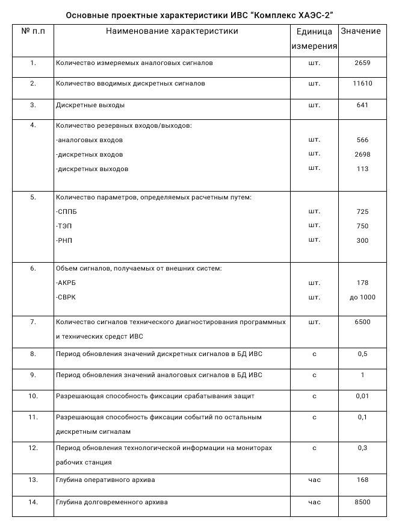

УСЛУГИ
Институт предлагает:
- разработку ИВС и УВС систем в составе АСУ ТП энергоблоков ТЭС и АЭС;
- обследование объектов, проектирование и разработку АСУ ТП на вновь строящихся и модернизируемых объектах;
- выполнение проектных работ по реконструкции, совершенствованию и внедрению АСУ ТП энергоблоками, находящимися в эксплуатации и вновь вводимыми;
- тиражирование разработанных систем в целом и их отдельных частей;
- разработку эксплуатационной документации по информационному, программному и техническому обеспечению АСУ ТП энергоблоками;
- подготовку персонала для эксплуатации ИВС и УВС в составе АСУ ТП энергоблоков;
- методическую и консультативную помощь при создании АСУ ТП в энергетике;
- сопровождение систем в эксплуатации.
РАЗРАБОТКИ И ДОСТИЖЕНИЯ
- Разработка методов создания интегрированных систем управления технологическими процессами энергоблоков ТЭС и АЭС, где совместно производится решение задач технологического, экономического и диагностического контроля;
- Разработка методов создания интегрированных систем управления технологическими процессами энергоблоков ТЭС и АЭС, где совместно производится решение задач технологического, экономического и диагностического контроля;
- контроля и регистрации (сбор и обработка информации, вводимой через комплекс связи с объектом (КСО), обмен информацией по локальной сети блока, обмен информацией с внешними системами, отображение информации, сигнализация нарушений, контроль параметров генератора, регистрация (архивирование и документирование) информации.
- обслуживания защит и блокировок (контроль защит и блокировок (КЗБ), централизованное опробывание защит (ЦОЗ);
- прикладных задач (расчет и анализ технико-экономических показателей (ТЭП) оборудования, расчет неизмеряемых параметров;
- контроля параметров безопасности (непрерывное (в реальном масштабе времени) отображение оператору информации, достаточной для определения состояния безопасности энергоблока, информационная поддержка деятельности оператора по предотвращению и локализации аварийных ситуаций, контролю выхода радиоактивности в процессе нормальной эксплуатации, при возникновении и после проектных аварий);
- информационно-справочная (выдача рекомендаций по управлению технологическим оборудованием в переходных режимах работы энергоблока, представления справочной информации о технологическом оборудовании и средствах АСУ ТП энергоблока);
- поддержка функционирования (диагностика состояния технических и программных средств ИВС, управление функционированием ИВС, метрологическая калибровка измерительных каналов);
- автоматизированной настройки ( генерация структур баз данных, ввод, структурирование и редактирование исходных данных, генерация настроечных данных. Основные проектные характеристики системы приведены в таблице ниже.
- Экологический мониторинг окружающей среды, информационное взаимодействие в системе энергоблок-электростанция-энергосистема;
- Разработка и внедрение многофункциональной интегрированной многоуровневой системы внутриреакторного контроля СВРК-М для энергоблоков с реакторами ВВЭР-1000 с резервированием наиболее важных функций и открытую для дальнейшего расширения, которая позволяет:
- проводить контроль технологических процессов в реакторной установке (РУ) и поддерживать параметры этих процессов в рамках, установленных регламентом безопасной эксплуатации АЭС;
- своевременно выявлять выход параметров РУ, определяющих границы безопасной эксплуатации за разрешенные границы и оповещение оперативного персонала;
- обеспечивать информационной поддержки для оптимизации прохождения технологических процессов РУ в переходных режимах;
- контроль работоспособности и метрологических характеристик измерительных каналов СВРК-М в процессе эксплуатации энергоблока;
- архивация работы активной зоны РУ и состояния теплоносителя 1-го контура.

- Программное обеспечение ИВС верхнего уровня состоит:
- комплекса программ отображения информации на экранах операторов блока;
- комплекса программ сигнализации нарушений;
- комплекса программ архивации и регистрации;
- редактора подготовки видеокадров;
- редактора динамических блоков;
- редактор алгоритмов отображения.
Все программы реализованы на языке С++ с использованием библиотеки Qt и методов объектно-ориентированного проектирования. В качестве системы управления БД используется Firebird. Системное программное обеспечение (СПО) реализовано на базе операционной системы Linux Fedora.
Разрабатываемое ПО проходит обязательную процедуру верификации. Испытания ПО проводятся: на уникальном полигоне ГП «ХИКА», на предприятии изготовителе технических средств, на энергоблоке при вводе в эксплуатацию. Поддержка OPC технологии. Собственная уникальная SCADA система. Среда функционирования ПО ОС UNIX и ОС Windows.